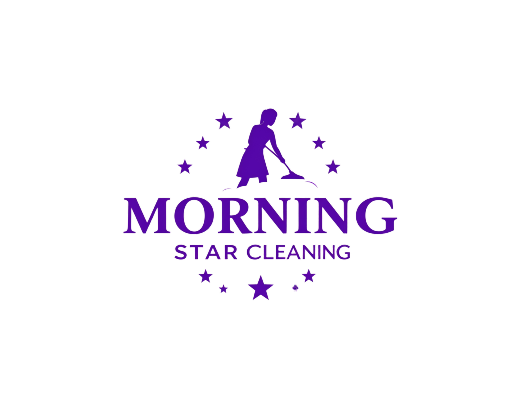

Why Choose Us
1. We Treat Your Home Like Our Home
Our local cleaning crews are professionally trained on the Detail-Clean Rotation System. If you are ever unhappy with any area that has been cleaned, please contact your local office within 24 hours of the clean, and they will gladly return the next day to address any concers.
2. Our Passion for the Environment
We as a company are commited to using cleaning products that are environmentally responsible, sustainable, and safe for the Earth.
3. Competitive Pricing
At Morning Star Cleaning we offer transparent rates with no hidden fees. Get premium service at an affordable price.